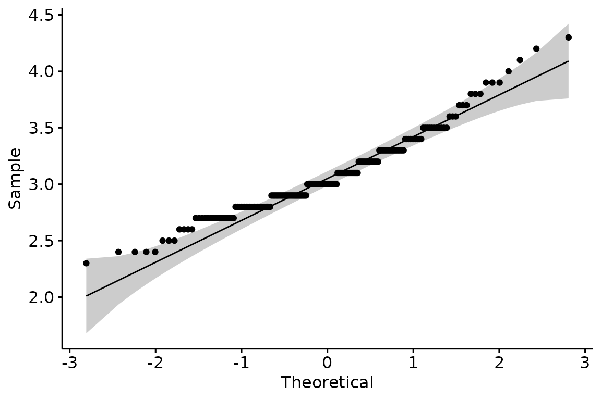
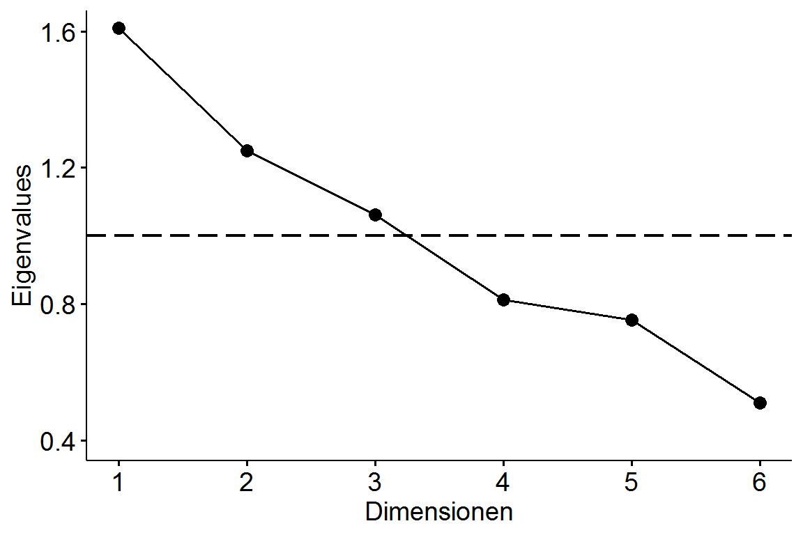

vignettes/05_Inferenzstatistik.Rmd
05_Inferenzstatistik.RmdViele inferenzstatistische Verfahren sind direkt in R integriert. Ein paar Verfahren müssen wir jedoch mit externen Packages rechnen. Leider ist weder in Base R noch in den Packages eine wirklich konsistente, Pipe-freundliche Syntax gegeben. Außerdem sind die Outputs unbearbeitet nicht übersichtlich lesbar. Im Folgenden schauen wir uns diverse statistische Verfahren an und lassen uns die Ergebnisse in schöner Form mit Funktionen des broom (engl. für Besen) Packages wiedergeben. Aber dazu später mehr. Das Ziel dieses Kapitel ist das Vorstellen der Funktionen mit ihren Argumenten. Es dient mehr als Komprehendium zum Nachschlagen, allerdings sollte man den grundlegenden Workflow verstanden und sich vor allem den Exkurs zu Dollar-Operatoren angeschaut haben. Bevor wir in die Inferenzstatistik eintauchen, schauen wir uns zuerst die Stichprobenplanung und Power-Berechnung an.
Sowohl für die Stichprobenplanung als auch für die Power-Berechenung benötigen wir das Package pwr.
library(pwr)Möchten wir nun zum Beispiel die optimale Stichprobengröße für eine ANOVA mit zwei Gruppen k, einer erwarteten Effektstärke f von .3 und einem \(\alpha\)-Niveau von 5% bei einer Power von 0.8 erhalten, benutzen wir pwr.anova.test() und setzen ein.
pwr.anova.test(k = 2,
f = 0.3,
sig.level = 0.05,
power = 0.8)##
## Balanced one-way analysis of variance power calculation
##
## k = 2
## n = 44.58577
## f = 0.3
## sig.level = 0.05
## power = 0.8
##
## NOTE: n is number in each groupFür andere Verfahren gibt es nach dem gleichen Schema entsprechende Funktionen (beispielsweise pwr.t.test()). Wenn man Post-Hoc die Power ausrechnen möchte, verwendet man die selbe Funktion. Anstelle des power Arguments schreiben wir aber diesmal die beobachtete Stichprobengrösse n als Argument in die Funktion. Beachte, dass f auch hier die erwartete und nicht die beobachtete Effektstärke ist!
pwr.anova.test(k = 2,
n = 30,
f = 0.3,
sig.level = 0.05)##
## Balanced one-way analysis of variance power calculation
##
## k = 2
## n = 30
## f = 0.3
## sig.level = 0.05
## power = 0.6275046
##
## NOTE: n is number in each groupFalls die Stichprobenplanung für den gewünschten Test nicht in pwr implementiert ist, sei an dieser Stelle auf g*Power verwiesen.
Während der Inferenzstatistik lässt es sich leider nicht vermeiden, ab und an das Dollarzeichen zu verwenden, um eine Spalte des Datensatzes auszuwählen. Warum geht es hier nicht einfach zuvor mit select()? Schauen wir uns mal genauer an, was die beiden Befehle jeweils zurückgeben.
tipp_wm %>%
select(Person)## # A tibble: 384 x 1
## Person
## <chr>
## 1 Thomas_Bayes
## 2 Thomas_Bayes
## 3 Thomas_Bayes
## 4 Thomas_Bayes
## 5 Thomas_Bayes
## 6 Thomas_Bayes
## 7 Thomas_Bayes
## 8 Thomas_Bayes
## 9 Thomas_Bayes
## 10 Thomas_Bayes
## # ... with 374 more rowsWährend select() einen tibble mit der ausgewählten Spalte zurückgibt, erhält man durch den Dollar-Operator einen Vektor. Was genau Vektoren ausmachen, ist an dieser Stelle nicht weiter wichtig und wird deshalb unter Extras erläutert. Um die Spalte ausgeben zu lassen, hat man immer das selbe Schema: datensatzName$spaltenName. Wollen wir aus dem Datensatz tipp_wm die Spalte Person herausziehen, schreiben wir einfach
tipp_wm$Person## [1] "Thomas_Bayes" "Thomas_Bayes" "Thomas_Bayes" "Thomas_Bayes"
## [5] "Thomas_Bayes" "Thomas_Bayes" "Thomas_Bayes" "Thomas_Bayes"
## [9] "Thomas_Bayes" "Thomas_Bayes"Um zu entscheiden, welchen Test wir verwenden dürfen, müssen wir erst die Voraussetzungen prüfen.
Am besten prüft man die Normalverteilung rein graphisch mit Q-Q Plots.
Dafür verwenden wir erneut das Package ggpubr (siehe Kapitel Visualisierungen).
library(ggpubr)Als erstes Argument übergeben wir den Namen des Datensatzes. In Anführungszeichen schreiben wir als zweites Argument die zu überprüfende Spalte.
ggqqplot(big_five, "Extraversion")
Alternativ kann auch der Shapiro-Wilks Test verwendet werden. Hier verwenden wir zum ersten mal die Dollar-Syntax. Der Funktion übergeben wir die Spalte Extraversion aus dem Datensatz big_five.
shapiro.test(big_five$Extraversion)##
## Shapiro-Wilk normality test
##
## data: big_five$Extraversion
## W = 0.95715, p-value = 9.845e-06Nun sieht der p-Wert etwas seltsam aus. Bei SPSS und Stata wird unter .001 nur noch <.001 angezeigt. In base R hingegen wird bis 2e-16, also \(2 \times 10^{-16}\) (0.0000000000000002) differenziert. Mit dem broom Package gibt es keine Untergrenze.
Die zu überprüfende Spalte wird genau wie beim Shapiro Wilks Test übergeben. Zusätzlich muss noch rnorm in Anführungszeichen zum Testen auf Normalverteilung übergeben werden.
ks.test(big_five$Extraversion, "rnorm")##
## One-sample Kolmogorov-Smirnov test
##
## data: big_five$Extraversion
## D = 3.8099, p-value < 2.2e-16
## alternative hypothesis: two-sidedAuch beim Testen der Varianzhomogenität gibt es drei bekannte Verfahren. Ab hier werden wir versuchen, ein konsistentes Schema zum Testen zu entwickeln.
Zuerst rufen wir den F-Test mit var.test() auf. Angenommen wir möchten Extraversion zwischen den Geschlechtern auf Varianzhomogenität prüfen. Getrennt werden die Variablen durch eine sogenannte Tilde (~). Diese Schreibweise ist zwingend notwendig, wenn man als zweite Spalte eine kategorisierende Spalte wie Geschlecht (zwei Ausprägungsgrade) der Funktion übergibt. Um schön formatierte Ergebnisse zu erhalten, rufen wir zuletzt tidy() auf, welches eine Funktion aus dem bereits erwähnten broom Package ist, auf das wir ständig zurückgreifen werden. Zuerst müssen wir also das Package laden. Da wir wieder die Pipe verwenden, müssen wir selbstverständlich auch das tidyverse wieder laden.
library(broom)
library(tidyverse)Nun können wir den F-Test rechnen.
var.test(Extraversion ~ Geschlecht, data = big_five) %>%
tidy()## Multiple parameters; naming those columns num.df, denom.df## # A tibble: 1 x 9
## estimate `num df` `denom df` statistic p.value conf.low conf.high method
## <dbl> <int> <int> <dbl> <dbl> <dbl> <dbl> <chr>
## 1 1.19 117 81 1.19 0.413 0.787 1.76 F tes~
## # ... with 1 more variable: alternative <chr>Die Spalte statistic enthält die jeweilige Teststatistik – in dem Fall den F-Wert. Man kann den F-Test mit alternative für einseitig oder zweiseitige Tests und mit conf.level das \(\alpha\) Niveau anpassen. Nun wollen wir die Varianzhomogenität zwischen Extraversion und Neurotizismus überprüfen. Exemplarisch seien hier die veränderbaren zusätzlichen Argumente mit aufgelistet. Dies ist allerdings für Dich nur notwendig, wenn Du die Argumente verändern möchtest. Weil die zweite Variable keine kategorisierende ist, müssen wir wieder auf die Dollar-Syntax zurückgreifen (datenName$spaltenName)
var.test(big_five$Extraversion, big_five$Neurotizismus,
alternative = "two.sided",
conf.level = 0.95) %>%
tidy()## Multiple parameters; naming those columns num.df, denom.df## # A tibble: 1 x 9
## estimate `num df` `denom df` statistic p.value conf.low conf.high method
## <dbl> <int> <int> <dbl> <dbl> <dbl> <dbl> <chr>
## 1 0.258 199 199 0.258 3.55e-20 0.196 0.342 F tes~
## # ... with 1 more variable: alternative <chr>Der Bartletts Test funktioniert wie der F-Test. Nur können hier keine zusätzlichen Argumente übergeben werden.
bartlett.test(big_five$Extraversion ~ big_five$Geschlecht) %>%
tidy()## # A tibble: 1 x 4
## statistic p.value parameter method
## <dbl> <dbl> <dbl> <chr>
## 1 0.690 0.406 1 Bartlett test of homogeneity of variancesFür den Levene Test benötigen wir mit car ein externes Packages.
library(car)Die Funktion ist leider nicht konsistent benannt, da der Funktionsname von keinem Punkt getrennt und zusätzlich das zweite Wort (Test) groß geschrieben wird. Also Achtung vor Tippfehlern! Ansonsten funktioniert hier alles wie gewohnt.
leveneTest(big_five$Extraversion, big_five$Geschlecht) %>%
tidy()## Warning in leveneTest.default(big_five$Extraversion, big_five$Geschlecht):
## big_five$Geschlecht coerced to factor.## # A tibble: 2 x 4
## term df statistic p.value
## <chr> <int> <dbl> <dbl>
## 1 group 1 0.0000925 0.992
## 2 "" 198 NA NASind alle Voraussetzungen geprüft, geht es ans Testen.
Zwischen abhängigen und unabhängigen t-Tests sowie zwischen t-Test und Welch-Test besteht in R kaum ein syntaktischer Unterschied.
Schauen wir uns zuerst die grundlegende Funktion t.test() an. Dabei ändert sich nichts im Vergleich zu den vorherigen Tests auf Varianzhomogenität. Auch hier haben wir die Unterteilung durch die Tilde (~), wenn die zweite Spalte kategorisierend ist und die Dollar-Syntax bei zwei intervallskalierten Variablen.
t.test(Extraversion ~ Geschlecht, data = big_five,
paired = FALSE,
var.equal = TRUE) %>%
tidy()## # A tibble: 1 x 9
## estimate1 estimate2 statistic p.value parameter conf.low conf.high method
## <dbl> <dbl> <dbl> <dbl> <dbl> <dbl> <dbl> <chr>
## 1 3.05 3.11 -1.27 0.204 198 -0.162 0.0347 " Two~
## # ... with 1 more variable: alternative <chr>Die Argumente alternative und conf.level können auch hier geändert werden. Entscheidend für einen abhängigen oder unabhängigen t-Test ist jedoch das paired Argument. Setze es auf TRUE für abhängige und auf FALSE für unabhängige Stichproben. Das Argument var.equal besagt, dass wir von Varianzhomogenität ausgehen (also einen t-test machen).
t.test(big_five$Extraversion, big_five$Neurotizismus,
alternative = "two.sided",
conf.level = 0.95,
paired = FALSE,
var.equal = TRUE) %>%
tidy()## # A tibble: 1 x 9
## estimate1 estimate2 statistic p.value parameter conf.low conf.high method
## <dbl> <dbl> <dbl> <dbl> <dbl> <dbl> <dbl> <chr>
## 1 3.08 3.13 -1.05 0.292 398 -0.163 0.0493 " Two~
## # ... with 1 more variable: alternative <chr>Bei heterogenen Varianzen muss man zum Verwenden des nicht-parametrischen Welch-Tests lediglich das var.equal Argument auf FALSE setzen.
t.test(big_five$Extraversion, big_five$Neurotizismus,
alternative = "two.sided",
conf.level = 0.95,
paired = FALSE,
var.equal = FALSE) %>%
tidy()## # A tibble: 1 x 10
## estimate estimate1 estimate2 statistic p.value parameter conf.low
## <dbl> <dbl> <dbl> <dbl> <dbl> <dbl> <dbl>
## 1 -0.0570 3.08 3.13 -1.05 0.293 295. -0.163
## # ... with 3 more variables: conf.high <dbl>, method <chr>,
## # alternative <chr>In der method Spalte im Output steht nun auch Welch.
Für die Effektstärke nach Cohen laden wir das Package effsize.
library(effsize)Auch hier kommt die Dollar-Syntax zum Einsatz.
cohen.d(big_five$Extraversion, big_five$Neurotizismus) ##
## Cohen's d
##
## d estimate: -0.1054057 (negligible)
## 95 percent confidence interval:
## inf sup
## -0.30213641 0.09132499In Klammern hinter der Effekstärke steht sogar direkt eine Einordnung über die Größe.
Auch bei Regressionsanalysen ändert sich nicht viel. Wichtig ist ab jetzt nur, dass die abhängige Variable auf der linken Seite der Tilde (~) steht und die unabhängigen Variablen auf der rechten Seite. Der Befehl heißt lm(), was für linear model steht.
Eine einfache lineare Regression erhalten wir noch nach genau dem selben Schema wie zuvor.
lm(Extraversion ~ Neurotizismus, data = big_five) %>%
tidy()## # A tibble: 2 x 5
## term estimate std.error statistic p.value
## <chr> <dbl> <dbl> <dbl> <dbl>
## 1 (Intercept) 2.96 0.116 25.7 7.01e-65
## 2 Neurotizismus 0.0354 0.0360 0.984 3.27e- 1Möchten wir jetzt mehrere unabhängige Variablen auf Einfluss prüfen, müssen wir diese nur mit einem Pluszeichen hinzufügen.
lm(Extraversion ~ Neurotizismus + Geschlecht, data = big_five) %>%
tidy()## # A tibble: 3 x 5
## term estimate std.error statistic p.value
## <chr> <dbl> <dbl> <dbl> <dbl>
## 1 (Intercept) 2.90 0.123 23.5 5.95e-59
## 2 Neurotizismus 0.0469 0.0367 1.28 2.03e- 1
## 3 Geschlechtm 0.0768 0.0508 1.51 1.32e- 1Wenn wir eine Interaktion zwischen Neurotizismus und Geschlecht erwarten würden, müsste man nur das Pluszeichen durch ein Multiplikationszeichen ersetzen.
lm(Extraversion ~ Neurotizismus * Geschlecht, data = big_five) %>%
tidy()## # A tibble: 4 x 5
## term estimate std.error statistic p.value
## <chr> <dbl> <dbl> <dbl> <dbl>
## 1 (Intercept) 3.04 0.167 18.2 5.39e-44
## 2 Neurotizismus 0.00374 0.0504 0.0741 9.41e- 1
## 3 Geschlechtm -0.207 0.233 -0.889 3.75e- 1
## 4 Neurotizismus:Geschlechtm 0.0917 0.0735 1.25 2.14e- 1Denke daran, dass \(e-1\) für \(\times 10^{-1}\) steht. Der p-Wert zur Interaktion wäre also \(0.214\).
Natürlich interessiert uns nicht nur der p-Wert, sondern auch die Effektstärke \(R^2\) und die Informationskriterien (AIC, BIC). Anstelle von tidy() schreiben wir dafür einfach glance().
lm(Extraversion ~ Neurotizismus * Geschlecht, data = big_five) %>%
glance()## # A tibble: 1 x 11
## r.squared adj.r.squared sigma statistic p.value df logLik AIC BIC
## * <dbl> <dbl> <dbl> <dbl> <dbl> <int> <dbl> <dbl> <dbl>
## 1 0.0240 0.00911 0.345 1.61 0.188 4 -68.9 148. 164.
## # ... with 2 more variables: deviance <dbl>, df.residual <int>Für eine logistische Regression ändert sich der Befehl zu glm() (für Generalized linear model). Der Rest bleibt gleich. Zum exemplarischen Rechnen, müssen wir erst das Geschlecht numerisch kodieren.
big_five_new <- big_five %>%
mutate(Geschlecht = if_else(Geschlecht == "m", 1, 0))Nun können wir wie gewohnt das Modell aufstellen.
glm(Geschlecht ~ Neurotizismus, data = big_five_new) %>%
tidy()## # A tibble: 2 x 5
## term estimate std.error statistic p.value
## <chr> <dbl> <dbl> <dbl> <dbl>
## 1 (Intercept) 0.878 0.161 5.44 0.000000154
## 2 Neurotizismus -0.149 0.0503 -2.97 0.00337Eine hierarchische Regression ist nichts anderes als das Vergleichen verschiedener linearer Modelle unter Hinzufügen von Variablen. Wir werden für eine größere Übersichtlichkeit die Modelle diesmal in Variablen speichern. Beachte, dass wir hier kein tidy() aufrufen, da wir die Informationskriterien der linearen Modelle später mit glance() vergleichen wollen.
model1 <- lm(Extraversion ~ Neurotizismus, data = big_five)
model2 <- lm(Extraversion ~ Neurotizismus + Geschlecht, data = big_five)
model3 <- lm(Extraversion ~ Neurotizismus + Geschlecht + Offenheit, data = big_five) Um die Modelle nun zu vergleichen, rufen wir drei mal glance() auf. Die Ergebnisse binden wir zeilenweise zusammen. Wie genau rbind() funktioniert, wird im Kapitel Extras erklärt.
rbind(
glance(model1),
glance(model2),
glance(model3)
)## # A tibble: 3 x 11
## r.squared adj.r.squared sigma statistic p.value df logLik AIC BIC
## * <dbl> <dbl> <dbl> <dbl> <dbl> <int> <dbl> <dbl> <dbl>
## 1 0.00486 -0.000164 0.347 0.967 0.327 2 -70.9 148. 158.
## 2 0.0163 0.00630 0.345 1.63 0.198 3 -69.7 147. 161.
## 3 0.0364 0.0216 0.343 2.47 0.0634 4 -67.7 145. 162.
## # ... with 2 more variables: deviance <dbl>, df.residual <int>Für eine p-Wert Korrektur können wir schlichtweg eine neue Spalte an den Ergebnisoutput mit mutate() hängen. Die korrigierten p-Werte erhalten wir dabei durch p.adjust(). Die verschiedenen Korrekturverfahren sind beispielsweise Holm, Benjamini-Hochberg oder Bonferroni. Exemplarisch gehen wir von Interaktionen von allen unabhängigen Variablen aus, um mehr p-Werte zum Vergleichen zu erhalten.
lm(Extraversion ~ Neurotizismus * Geschlecht * Offenheit, data = big_five) %>%
tidy() %>%
mutate(p_adjusted = p.adjust(p.value, method = "BH"))## # A tibble: 8 x 6
## term estimate std.error statistic p.value p_adjusted
## <chr> <dbl> <dbl> <dbl> <dbl> <dbl>
## 1 (Intercept) 5.48 1.56 3.50 5.72e-4 0.00457
## 2 Neurotizismus -0.495 0.454 -1.09 2.77e-1 0.554
## 3 Geschlechtm -0.882 2.31 -0.381 7.03e-1 0.970
## 4 Offenheit -0.744 0.466 -1.60 1.12e-1 0.448
## 5 Neurotizismus:Geschlech~ 0.0272 0.719 0.0378 9.70e-1 0.970
## 6 Neurotizismus:Offenheit 0.153 0.135 1.14 2.56e-1 0.554
## 7 Geschlechtm:Offenheit 0.215 0.689 0.312 7.55e-1 0.970
## 8 Neurotizismus:Geschlech~ 0.0149 0.213 0.0696 9.45e-1 0.970Für Varianzanalysen müssen wir einen bisher nicht erwähnten neuen Datentyp einführen - den Faktor. Faktoren sind Characters mit festgelegten Ausprägungsgraden. Wir schauen uns an dieser Stelle nur an, wie man Faktoren erstellen kann. Dabei greifen wir auf Funktionen aus dem Kapitel der Datenvorbereitung zu. Der Datensatz für die Varianzanalysen hat die Variablen iq, kreativitaet, zeitpunkt, gruppe und person_id.
## # A tibble: 90 x 5
## iq kreativitaet zeitpunkt gruppe person_id
## <dbl> <dbl> <fct> <fct> <dbl>
## 1 96.6 76.2 t1 A 1
## 2 104. 57.0 t1 B 2
## 3 117. 63.5 t1 C 3
## 4 91.9 18.6 t1 D 4
## 5 110. 73.6 t1 E 5
## 6 124. 55.5 t1 F 6
## 7 97.2 51.4 t1 A 7
## 8 104. 71.8 t1 B 8
## 9 119. 53.8 t1 C 9
## 10 92.9 42.3 t1 D 10
## # ... with 80 more rowsMöchten wir nun aus der Gruppenspalte einen Faktor machen, geht dies mit as.factor().
repeated %>%
mutate(gruppe = as.factor(gruppe))Angenommen Du möchtest alle Spalten mit Charactern in Faktoren umformatieren, geht das mit mutate_if().
repeated %>%
mutate_if(is.character, as.factor)Für mehrere Spalten verwendet man wie gewohnt mutate_at().
repeated %>%
mutate_at(vars(zeitpunkt, gruppe), as.factor)Mehr müssen wir auch gar nicht über Faktoren wissen. Ohne Faktoren können wir jedoch weder Kontraste einstellen noch den Tukey Post-Hoc Test berechnen; also am besten immer die unabhängigen Variablen bei Varianzanalysen in Faktoren umwandeln.
Vor jeder Varianzanalyse ohne Messwiederholung laden wir die drei Packages car, sjstats und broom.
library(car)
library(sjstats)
library(broom)Außerdem müssen wir die Kontraste diagonal einstellen, da wir ansonsten verzerrte Ergebnisse erhalten können. Dafür einfach den folgenden Befehl kopieren und in der Form ausführen.
options(contrasts = c("contr.sum", "poly.sum"))Die erste Zeile verändert sich syntaktisch nicht im Verlgeich zu Regressionmodellen. Nur der Befehl ändert sich zu aov(). In der zweiten Zeile rufen wir aus dem car Package die Anova() Funktion auf (beachte das großgeschriebene A), wordurch wir den Typ der Quadratsummen kontrollieren können. SPSS gibt zum Beispiel standardmäßig Typ 3 aus, R hingegen normalerweise Typ 1. Als letztes rufen wir aus dem sjstats Package die Funktion anova_stats() auf, um unter anderem direkt zusätzlich die Varianzerklärungen \(\eta^2\) zu erhalten.
aov(iq ~ zeitpunkt + gruppe, data = repeated) %>%
Anova(type = 3) %>%
anova_stats() ## term power sumsq meansq df statistic p.value etasq
## 1 (Intercept) 1.000 921619.274 921619.274 1 4741.995 0.000 0.980
## 2 zeitpunkt 0.231 400.918 200.459 2 1.031 0.361 0.000
## 3 gruppe 0.717 2094.995 418.999 5 2.156 0.067 0.002
## 4 Residuals NA 15936.917 194.353 82 NA NA NA
## partial.etasq omegasq partial.omegasq cohens.f
## 1 0.983 0.980 0.981 7.605
## 2 0.025 0.000 0.001 0.159
## 3 0.116 0.001 0.060 0.363
## 4 NA NA NA NASchauen wir zuerst, wie die Kontraste für die Gruppenspalte aussehen. Innerhalb von constrasts() übergeben wir die gewünschte Spalte mit gewohnter Dollar-Syntax.
contrasts(repeated$gruppe)## [,1] [,2] [,3] [,4] [,5]
## A 1 0 0 0 0
## B 0 1 0 0 0
## C 0 0 1 0 0
## D 0 0 0 1 0
## E 0 0 0 0 1
## F -1 -1 -1 -1 -1Möchtest Du nun die Kontraste anpassen, kannst Du dies manuell machen. Hierfür verwenden wir erneut rbind(). Dabei wird zeilenweise unsere Matrix erstellt.
contrasts(repeated$gruppe) <- rbind(c(-1, -1, -1, -1, -1),
c(0, 0, 0, 0, 1),
c(0, 0, 0, 1, 0),
c(0, 0, 1, 0, 0),
c(0, 1, 0, 0, 0),
c(1, 0, 0, 0, 0))Zur ANOVA mit Messwiederholung laden wir das Package lmerTest.
library(lmerTest)Der Befehl zum Erstellen des Modells ändert sich zu lmer(). Ansonsten ist der einzige Unterschied das Kontrollieren der zufälligen Effekte – hier die zufällig schwankenden IQ-Ausprägungen zwischen den Personen. Wir kontrollieren dies mit (1|person_id). Der Rest bleibt gleich.
## # A tibble: 3 x 4
## term statistic df p.value
## <chr> <dbl> <dbl> <dbl>
## 1 (Intercept) 3899. 1 0
## 2 zeitpunkt 2.88 2 0.237
## 3 gruppe 9.47 5 0.0918Für die Effektstärke greifen wir erneut auf das sjstats Package zurück. Diesmal rufen wir die Funktion r2() auf.
lmer(iq ~ zeitpunkt + gruppe + (1|person_id), data = repeated) %>%
r2()##
## R-Squared for Generalized Linear Mixed Model
##
## Family : gaussian (identity)
## Formula: iq ~ zeitpunkt + gruppe + (1 | person_id)
##
## Marginal R2: 0.130
## Conditional R2: 0.320Zum Rechnen multivariater Varianzanalysen wählen wir zuerst die abhängigen Variablen aus und konvertieren sie zu einer Matrix. Was es genau mit Matrizen auf sich hat, wird im Kapitel Extras erklärt.
AV <- repeated %>%
select(iq, kreativitaet) %>%
as.matrix()Für MANOVAs benötigen wir wieder die lm() Funktion. Das hängt damit zusammen, dass unter jeder ANOVA eine Regression steckt und aov() nur eine spezielle Art ist, den lm() Befehl auszuführen. MANOVAs funktionieren nicht mit aov()! Außerdem ändert sich Anova() zu Manova() und wir können den Output nicht mit tidy() aufräumen.
lm(AV ~ gruppe + zeitpunkt, data = repeated) %>%
Manova(type = 3) ##
## Type III MANOVA Tests: Pillai test statistic
## Df test stat approx F num Df den Df Pr(>F)
## (Intercept) 1 0.98595 2841.28 2 81 <2e-16 ***
## gruppe 5 0.15931 1.42 10 164 0.1757
## zeitpunkt 2 0.03310 0.69 4 164 0.5999
## ---
## Signif. codes: 0 '***' 0.001 '**' 0.01 '*' 0.05 '.' 0.1 ' ' 1Dabei steht Pr(>F) für den p-Wert. Für Vergleiche innerhalb der jeweiligen abhängigen Variable, benutze summary.aov().
lm(AV ~ gruppe + zeitpunkt, data = repeated) %>%
summary.aov() ## Response iq :
## Df Sum Sq Mean Sq F value Pr(>F)
## gruppe 5 2095.0 419.00 2.1559 0.06693 .
## zeitpunkt 2 400.9 200.46 1.0314 0.36108
## Residuals 82 15936.9 194.35
## ---
## Signif. codes: 0 '***' 0.001 '**' 0.01 '*' 0.05 '.' 0.1 ' ' 1
##
## Response kreativitaet :
## Df Sum Sq Mean Sq F value Pr(>F)
## gruppe 5 1167.0 233.40 0.7401 0.5956
## zeitpunkt 2 184.7 92.33 0.2928 0.7470
## Residuals 82 25860.2 315.37Beim nicht-parametrischen Kruskall-Willis Test verändert sich syntaktisch nichts im Vergleich zu Regressionsmodellen und Varianzanalysen.
kruskal.test(iq ~ gruppe, data = repeated) %>%
tidy()## # A tibble: 1 x 4
## statistic p.value parameter method
## <dbl> <dbl> <int> <chr>
## 1 9.67 0.0853 5 Kruskal-Wallis rank sum testIm folgenden seien zwei mögliche Post-Hoc Vergleiche vorgestellt.
Für den Test von Tukey auf Honest Significant Differences (HSD) ändert sich nicht viel im Vergleich zur ANOVA. Nur wird nach der ANOVA die Funktion TukeyHSD() aufgerufen und dann der Output ins aufgeräumte Format gebracht.
aov(iq ~ zeitpunkt * gruppe, data = repeated) %>%
TukeyHSD() %>%
tidy()## # A tibble: 171 x 6
## term comparison estimate conf.low conf.high adj.p.value
## <chr> <chr> <dbl> <dbl> <dbl> <dbl>
## 1 zeitpunkt t2-t1 -5.15 -13.8 3.47 0.331
## 2 zeitpunkt t3-t1 -2.23 -10.9 6.39 0.810
## 3 zeitpunkt t3-t2 2.92 -5.70 11.5 0.697
## 4 gruppe B-A 7.45 -7.47 22.4 0.689
## 5 gruppe C-A 3.34 -11.6 18.3 0.986
## 6 gruppe D-A -2.54 -17.5 12.4 0.996
## 7 gruppe E-A 11.4 -3.51 26.3 0.233
## 8 gruppe F-A -0.124 -15.0 14.8 1.000
## 9 gruppe C-B -4.11 -19.0 10.8 0.966
## 10 gruppe D-B -9.99 -24.9 4.93 0.375
## # ... with 161 more rowsHier müssen wir erneut auf den Dollar Operator zurückgreifen. Als zusätzliches Argument kann man mit p.adjust.method() die Korrekturmethode festlegen.
pairwise.t.test(repeated$iq, repeated$gruppe,
p.adjust.method = "none") ##
## Pairwise comparisons using t tests with pooled SD
##
## data: repeated$iq and repeated$gruppe
##
## A B C D E
## B 0.1472 - - - -
## C 0.5132 0.4224 - - -
## D 0.6192 0.0531 0.2512 - -
## E 0.0277 0.4392 0.1171 0.0075 -
## F 0.9807 0.1407 0.4978 0.6363 0.0261
##
## P value adjustment method: noneEs gibt einen Unterschied, ob man die Korrelation zwischen zwei Variablen berechnen (mit p-Wert) oder eine Korrelationstabelle mit allen Korrelation erhalten möchte.
Die Standardeinstellung für cor.test ist die Produkt-Moment Korrelation nach Pearson. Die Argumente method, alternative und conf.level sind also optional.
cor.test(big_five$Extraversion, big_five$Neurotizismus,
method = "pearson",
alternative = "two.sided",
conf.level = .95) %>%
tidy()## # A tibble: 1 x 8
## estimate statistic p.value parameter conf.low conf.high method
## <dbl> <dbl> <dbl> <int> <dbl> <dbl> <chr>
## 1 0.0697 0.984 0.327 198 -0.0697 0.206 Pears~
## # ... with 1 more variable: alternative <chr>Für die Rangkorrelation nach Spearman muss man lediglich das method Argument entsprechend anpassen (natürlich müssen die Variablen eigentlich ordinal sein).
cor.test(big_five$Extraversion, big_five$Neurotizismus,
method = "spearman",
alternative = "two.sided",
conf.level = .95) %>%
tidy()## Warning in cor.test.default(big_five$Extraversion,
## big_five$Neurotizismus, : Cannot compute exact p-value with ties## # A tibble: 1 x 5
## estimate statistic p.value method alternative
## <dbl> <dbl> <dbl> <chr> <chr>
## 1 0.0487 1268305. 0.493 Spearman's rank correlation rho two.sidedNun kann es schon mal vorkommen, dass man mehr als zwei Variablen miteinander in einer Korrelationstabelle untersuchen möchte. Zuerst wählen wir im repeated Datensatz alle numerischen Spalten aus.
repeated_num <- repeated %>%
select_if(is.numeric)Dann verwenden wir die Funktion cor().
cor(repeated_num) ## iq kreativitaet person_id
## iq 1.00000000 0.01162833 -0.15539732
## kreativitaet 0.01162833 1.00000000 0.03990274
## person_id -0.15539732 0.03990274 1.00000000Eine Kontigenztafel erstellt man einfach mit table(). Möchten wir zum Beispiel wissen, welches der Geschlechter häufiger eine starke Ausprägung von Extraversion mit über 3.5 haben, schreiben wir einfach
table(big_five$Geschlecht, big_five$Extraversion > 3.5)##
## FALSE TRUE
## f 108 10
## m 76 6Schauen wir uns nun an, wie man Kontigenztafeln analysiert. Angenommen wir haben vorherige Kontingenztafel als tbl gespeichert.
Für den Fisher-Exact Test für \(2\times2\) Kontigenztafeln, müssen wir nun lediglich unsere Kontingenztafel tbl der Funktion fisher.test() übergeben. Auch hier bereinigen wir den Output mit tidy().
fisher.test(tbl) %>%
tidy()## # A tibble: 1 x 6
## estimate p.value conf.low conf.high method alternative
## <dbl> <dbl> <dbl> <dbl> <chr> <chr>
## 1 0.853 1.000 0.244 2.72 Fisher's Exact Test for~ two.sidedDie Spalte estimate im Output ist in dem Fall die Odds ratio.
Das gleiche gilt für den Mcenamr Test. Hier sparen wir uns tidy(), weil der Output ohnehin bereits schön aufgeräumt aussieht.
mcnemar.test(tbl) ##
## McNemar's Chi-squared test with continuity correction
##
## data: tbl
## McNemar's chi-squared = 49.128, df = 1, p-value = 2.398e-12Kommen wir nun zum letzten Thema – der explorativen Faktorenanalyse. Dabei betrachten wir zwei Verfahren: die Principal Component Analysis (PCA) und die Maximum Likelihood Faktorenanalyse (EFA). Zuerst wählen wir alle numerischen Spalten aus dem big_five Datensatz aus (alle anderen sind unbrauchbar).
num_data <- big_five %>%
select_if(is.numeric)Für die naive Hauptkomponentenanalyse (PCA) muss man keine Annahmen über die Faktorenanzahl treffen. Das einzige Argument, was man der Funktion princomp() übergeben muss, ist der Datensatz.
fit <- princomp(num_data)Die Ladungen der Faktoren auf die Komponenten erhalten wir mit loadings().
loadings(fit)##
## Loadings:
## Comp.1 Comp.2 Comp.3 Comp.4 Comp.5 Comp.6
## Alter 1.000
## Extraversion -0.609 0.300 0.726
## Neurotizismus 0.980 0.150 0.127
## Vertraeglichkeit -0.673 -0.502 -0.535
## Gewissenhaftigkeit 0.153 -0.391 -0.509 0.719 -0.218
## Offenheit -0.794 -0.472 0.373
##
## Comp.1 Comp.2 Comp.3 Comp.4 Comp.5 Comp.6
## SS loadings 1.000 1.000 1.000 1.000 1.000 1.000
## Proportion Var 0.167 0.167 0.167 0.167 0.167 0.167
## Cumulative Var 0.167 0.333 0.500 0.667 0.833 1.000Bei einer EFA muss man die Faktorenanzahl und die Rotationsart festlegen. Bei 5 erwarteten Faktoren und einer orthogonalen Rotation erhält man die Faktorenanalyse mit factanal() wie folgt
fac <- factanal(num_data, factors = 2, rotation = "varimax")Möchte man im Output übersichtlich nur Werte mit 2 Nachkommastellen in absteigender Form mit Werten größer 0.3, benutzt man print().
fac %>%
print(digits = 2, cutoff = 0.3, sort = TRUE)##
## Call:
## factanal(x = num_data, factors = 2, rotation = "varimax")
##
## Uniquenesses:
## Alter Extraversion Neurotizismus
## 0.96 0.00 0.91
## Vertraeglichkeit Gewissenhaftigkeit Offenheit
## 0.77 0.76 0.76
##
## Loadings:
## Factor1 Factor2
## Extraversion 0.97
## Alter
## Neurotizismus
## Vertraeglichkeit 0.46
## Gewissenhaftigkeit 0.30 0.39
## Offenheit 0.49
##
## Factor1 Factor2
## SS loadings 1.26 0.58
## Proportion Var 0.21 0.10
## Cumulative Var 0.21 0.31
##
## Test of the hypothesis that 2 factors are sufficient.
## The chi square statistic is 5.13 on 4 degrees of freedom.
## The p-value is 0.274Möchte man mit den Ergebnissen weiterrechen, kann man auch hier wieder tidy() verwenden.
fac %>%
tidy() ## # A tibble: 6 x 4
## variable uniqueness fl1 fl2
## * <chr> <dbl> <dbl> <dbl>
## 1 Alter 0.960 -0.0281 0.199
## 2 Extraversion 0.005 0.970 -0.234
## 3 Neurotizismus 0.912 0.136 0.264
## 4 Vertraeglichkeit 0.766 0.457 0.157
## 5 Gewissenhaftigkeit 0.755 0.300 0.393
## 6 Offenheit 0.763 -0.0217 0.486Das Kaiser-Maier-Olkin Kriterium erhält mit man mit der KMO() Funktion aus dem psych Package.
KMO(num_data)## Kaiser-Meyer-Olkin factor adequacy
## Call: KMO(r = num_data)
## Overall MSA = 0.51
## MSA for each item =
## Alter Extraversion Neurotizismus
## 0.43 0.48 0.61
## Vertraeglichkeit Gewissenhaftigkeit Offenheit
## 0.52 0.60 0.45Den Scree Plot erhalten wir nach Laden von rBasics mit scree_plot(). Dabei gibt die Funktion einen ggplot zurück.
scree_plot(num_data)Wir erinnern uns, alle Graphen aus dem Package ggpubr (siehe Kapitel Visualisierungen) basieren auf ggplot2. Das heißt, wir können den Graphen ganz normal mit ggpar() anpassen. Angenommen wir hätten den Graphen als plot gespeichert, könnten wir die Parameter einfach anpassen mit
ggpar(plot,
font.x = 14,
font.y = 14,
font.tickslab = 14,
ylim = c(0.4, 1.6))